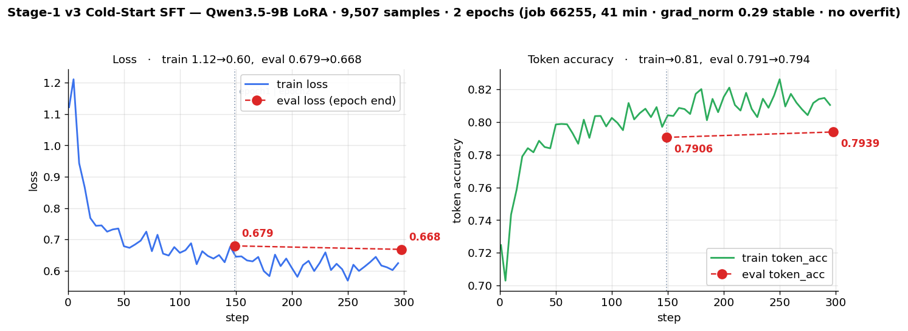

Stage-1 · 콜드스타트 SFT — 데이터 v1~v3, 학습 설정, ablation, 적합성 판단
sft_mixed(일반+의료 혼합, train 9,507건)다. v3 는 v2 대비 생성 strict format_think 를 0.185 에서 0.909 로 5배 올렸다(같은 하니스, 홀드아웃 972건). 홀드아웃 정답률은 0.295 에서 0.348 로 +0.053(상대 +18%) 올랐다. 이득은 전부 vl 에서 나왔다. v2 의 형식 천장은 RL 이 아니라 학습 데이터 결함(데이터 자체의 format_think 0.473)이 원인이었다. Ablation 은 콜드스타트가 RL 의 전제조건임을 보였다(RL 이득 +0.16 vs +0.03, 최대 출력 2,048). 따라서 Stage-1 은 필수다. 단 이것은 "RL 을 가능하게 하는 조건"이라는 뜻이다. 최대 출력 8,192 에서는 기본 모델 holdout(50.45%)이 SFT(42.67%)보다 높다. 기본 모델은 응답이 약 6~9배 길고 형식 준수율이 0.638 이다(00_overview 1.6, kgpu 측정).Stage-1 · 콜드스타트 SFT
- 목적: base(Qwen3.5-9B)는 본래 장문 추론(3.5~4.6K토큰)을 한다. 잘림은 0점이 되고, 이것이 RL 정체의 원인이다. 그래서 간결한
<think>/<answer>형식을 먼저 주입한다. - 핵심 결정: ZeRO-3 길이확대는 no-NVLink 에서 5배 느리다. 그래서 채택하지 않았다. 간결 콜드스타트로 해결했다.
버전 이력 — 세 번 재설계했다. 각 버전은 실측으로 폐기 또는 승계했다.
| 데이터 | format_think | 결과 | |
|---|---|---|---|
v1 sft_coldstart_* | VLAA clevr_math 단일 2,913 | — | ❌ 도메인 단일 → 일반화 실패, 폐기 |
v2 sft_rft_coldstart_* | 자기증류(RFT) 727 | 0.473 | ✅ 필수성 입증(ablation)·Stage-2 성공. 그러나 형식 천장 |
v3 sft_mixed_* (현행) | 일반+의료 혼합 9,507 | 1.000(게이트 강제) | ✅ 생성 format_think 0.909 · acc 0.348 — 천장 완파 (곡선 · 평가) |
v2 의 진짜 결함 — 데이터가 형식보상의 천장이었다 (2026-07-16 발견)
RL 이 최적화하는 보상은 format_think(configs/accuracy.py)다. 이 함수는 앵커 매칭(^<think>…</think>\s*<answer>…</answer>$)을 요구한다. 또 think 실질 16자 이상을 요구한다. 이 함수를 v2 학습 데이터에 그대로 돌렸다. 결과는 아래와 같다.
| 지표 | 값 |
|---|---|
v2 데이터의 format_think | 0.473 |
구조 위반(</think> 뒤에 장문 후 <answer>) | 364/727 (50.1%) |
<think> 가 사실상 빈 샘플 | 35 (4.8%, 그중 20이 객관식) |
원인은 소스에 있다. build_rft_coldstart.py:78 의 합격조건은 AccuracyMix>=1.0 and closed(c) and len(c)<=6000 이다. closed() = '</think>' in c and <answer> 존재 다. 여기에는 앵커링도 최소 추론길이도 없다. 당시 롤아웃 로그에는 느슨한 Format 컬럼만 있었다. 게다가 선별은 "가장 짧은 3개"(sorted(set(comps), key=len)[:3])다. 객관식에서 가장 짧은 정답은 <think></think><answer>C</answer> 다. 즉 추론 없는 찍기를 우선 선택한다. 4지선다는 찍어도 25% 가 AccuracyMix 를 통과한다.
→ 모델은 절반이 틀린 형식을 그대로 배웠다. 그래서 RL 시작 FormatThink 는 0.26 이었다. 600스텝 후에도 0.425 에서 정체했다. RL 이 못 배운 것이 아니다. 초기화가 잘못 가르쳤다.
v1·v2 구축 상세 — RFT 콜드스타트 (job 57242, 2026-06-16)
왜 필요했나: base(Qwen3.5-9B VL)는 어려운 시각/기하 문제에서 본래 매우 길게 추론한다. 4096/6144 토큰 budget 으로도 ~50% 가 잘린다 → 무답 0점. RL·budget 조정으로는 잡지 못했다. 그래서 간결 추론 습관을 SFT 로 재주입한다.
1차 (plain) 콜드스타트 — 폐기 (v1)
- 스크립트는
build_coldstart_sft.py다. 데이터는UCSC-VLAA/VLAA-Thinking의 clevr_math 서브셋(~5.9K)이다. answer 가 이미<think>…</think><answer>X</answer>형식이라 거의 그대로 썼다 →sft_coldstart_train.jsonl2913건. - 문제: clevr_math 는 너무 쉽다(평균 760자). 어려운 시각/기하 문제로 일반화에 실패했다(여전히 잘림).
RFT란? (Rejection-sampling Fine-Tuning) — 모델이 스스로 만든 답 중 정답인 것만 골라(rejection sampling) 그것으로 다시 SFT 하는 자기증류(self-distillation) 기법이다. 외부 정답 데이터 없이 모델 자신의 성공 사례로 부트스트랩한다.
- 생성(sample): 한 문제에 여러 후보 답(롤아웃)을 뽑는다.
- 거절(reject): 검증가능 정답과 대조한다. 틀린 것·형식 불량·잘린 것을 버린다.
- 정제(curate): 남은 정답에서 중복을 제거한다. 간결한 것 위주로 선별한다.
- 재학습(fine-tune): 이 선별셋으로 SFT 한다 → 좋은 습관을 모델에 고정한다. (반복하면 STaR/ReST)
계보: STaR(Zelikman 2022) · ReST(Gulcehre 2023) · RFT(Yuan 2023). 모두 "정답 롤아웃으로 SFT" 골격을 공유한다. RL(GRPO)은 보상 gradient 로 정책을 민다. RFT 는 정답 샘플만 남긴 offline SFT 라 싸고 안정적이다. 단 RFT 는 "정답을 더 잘 내게" 하는 것보다 이미 낼 수 있는 정답을 원하는 스타일로 고정하는 데 강하다 → 콜드스타트(형식·간결성 주입)에 맞다. base 는 어려운 문제도 가끔 맞히지만 장황해서 잘린다 → 그 "가끔 맞힌 간결한 성공"만 골라 되먹인다.
2차 (RFT) 콜드스타트 — v2
- 스크립트는
build_rft_coldstart.py다(DeepVision 롤아웃에 RFT 적용). 소스는 자기 GRPO 롤아웃 로그grpo_general/v*/completions.jsonl이다. - 필터 3중: ①
AccuracyMix==1.0(정답) ②<think></think><answer></answer>정상 마감(비잘림) ③len ≤ 6000자(≈2000토큰, 간결). (②가 느슨한closed()였던 것이 위 결함의 원인이다) - 선별: 질문당 가장 짧은 것부터 최대 3개(
PER_Q=3). 이미지 경로는 DeepVision 원본과 질문텍스트로 join 했다. - 결과:
sft_rft_coldstart_train.jsonl727건 + val 40건 (ms-swift{messages, images}포맷). (worklog 06-16 의 "767예시"는 727 + val 40 이다)
base Qwen3.5-9B + LoRA r16/a32 (all-linear)
727건 · 4 epochs · LR 1e-4 · max_len 4096 · bs1×grad_accum8 · 8GPU DDP
→ sft_rft_coldstart_lora/checkpoint-48
→ (merge, job 57245) sft_rft_coldstart_merged (18G) ← 구 Stage-2 init학습곡선 (48 step = 12 step/epoch × 4, 총 ~5분):
| epoch/step | train loss | val loss | val token_acc |
|---|---|---|---|
| step 1 | 0.263 | — | — |
| epoch 1 (step 12) | ~0.23 | 0.2149 | 0.9237 |
| epoch 2 (step 24) | ~0.19 | 0.2136 | 0.9236 |
| epoch 3 (step 36) | ~0.20 | 0.2137 | 0.9238 |
| epoch 4 (step 48) | 0.197 | 0.2138 | 0.9242 |
- 형식은 ~1 epoch 에 수렴했다. val loss 는 epoch 1 부터 0.214 로 평탄했다(이후 ±0.001). token_acc 는 0.924 를 유지했다. 추가 epoch 의 한계효용은 작다(과적합 없음). 형식 주입이 목적이라 val 조기수렴은 정상이다 — 출력 스타일 정렬이다. (val 평탄의 다른 원인은 질문 단위가 아닌 stride 분할이다 — 아래 v3 설계 5번)
- 727건 샘플·길이 분포: 예시(질문) "Jewel2 … 특수 원소가 몇 개인가"(시각논리 퍼즐) →
<think>보드 스캔·계산…</think><answer>N</answer>. assistant 완성문 길이(문자): 중앙값 2837 · 평균 2861 · 최소 36 · 최대 5979. - 검증: probe 추론(
probe_coldstart_think_true/false.jsonl,probe_rft_think_true.jsonl)으로 형식 준수를 확인했다. 후속 GRPO 에서 FormatThink 0.05→0.27(≈5배)·clip↓. 중간 홀드아웃(N=100): base 0.15 → init 0.22(형식 0.12→0.32, 길이 5907→5188자).
v3 설계 — scripts/build_mixed_coldstart.py
데이터 (전부 실측 검증 후 채택했다. 이름·초록만 보고 고르지 않았다.)
| 소스 | 샘플링 목표 | 추론 중앙값 | ≤6000자 | 라이선스 | 역할 |
|---|---|---|---|---|---|
neginb/OpenMedReason | 5,000 | 1,927자 | 100% | CC-BY-4.0 | 의료 신규 지식(19 taxonomy) |
TIGER-Lab/VisualWebInstruct-verified | 3,000 | 933자 | 100% | MIT | 일반, 자유형 정답 52.9% |
UCSC-VLAA/VLAA-Thinking (synthesis·clevr) | 2,500 | 649~934자 | 100% | Apache-2.0 | 일반, 이미 목표 형식 |
format_think==1.0)와 풀 부족 때문에 실제 채택은 9,889건이다. VWI 는 difficulty-5 풀이 57건뿐이라 3,000→2,390 으로 미달했다. 실측 내역은 학습에 쓴 데이터 표를 참조한다.왜 의료를 넣나: medix_rl_train(Stage-3 데이터) 51,335건은 assistant 가 통째로 비어 있다(prompt+solution 만 있다). 그래서 프로젝트에 의료 추론 트레이스가 0건이었다. v1·v2 는 둘 다 일반(clevr/DeepVision) 전용이었다. 그래서 Stage-3 전이가 미검증 한계로 남아 있었다.
설계에 반영한 6가지 (모두 위 결함에 직접 대응한다)
- 게이트 =
format_think == 1.0(느슨한closed()폐기) — v2 0.473 의 원인을 차단한다. - OpenMedReason 정답위치 편향 제거 — 정답이 거의 항상 A 에 있다(4지선다 A=77%, 5지선다 A=86%). 이미지를 안 보고 A 만 찍어도 77~86% 다. 보기 셔플은 불가하다. 추론문의 29.6% 가
option B식으로 문자를 참조하기 때문이다 → 정답 문자별 균형 샘플링(A/B/C/D 각 1,250). - 정답 정규화 — VLAA 는
\boxed66%·\[..\]76%·앞뒤공백 100% 다. 일부는<answer>에 산문을 통째로 넣었다 → 정규화하고 200자 초과는 배제한다.\boxed컨벤션은 이 프로젝트에서 폐기됐다. - 간결성 상한 6,000자 — 콜드스타트의 존재이유는 잘림 차단이다.
- 질문 단위 train/val 분할 — v2 는 질문 정렬 후 stride 분할이었다. 그래서 같은 질문의 형제가 양쪽에 있었다. 이것이 val loss 가 4에폭 내내 0.2136~0.2149 로 평탄했던 원인이다.
- 난이도 층화 — VWI
difficulty1~5 를 균등하게 뽑는다. v2 의 "가장 짧은 것" 선별은 찍기를 우선 선택했다.
후보 스크리닝에서 탈락한 것들 (간결성이 기준)
max_completion_length 가 2048~6144 다. 긴 trace 를 가르치면 장황→잘림→형식0 실패 모드를 재생산한다.
| 후보 | 추론 중앙값 | 판정 |
|---|---|---|
OpenDataArena/MMFineReason 1.8M | 9,059~11,178자 | ❌ Qwen3-VL-235B-Thinking 증류라 장황함이 생성자 속성이다. 쉬운 문제(pass_rate=1.0)만 골라도 9K 다. RL 단계 후보로 보류(pass_rate 난이도 라벨이 유용) |
| DeepVision 자기수확(Stage-2 롤아웃 21,786건, 무료·in-domain) | 4,393자 (37.5%가 6K 초과) | ❌ RL 모델이 길게 추론하도록 학습된 출력이다 → 장황함을 재학습한다 |
leduckhai/S-Chain | — | ❌ 10,783건인데 고유정답 3개(Non/Mild/Moderate-Dementia)·고유질문 170개·고정 3단계 템플릿 = 3지선다 반복. 또 우리 파이프라인에 grounding 보상이 없어 아무도 채점하지 않는 행동이다 |
FanqingM/MMK12 · MM-Eureka · ThinkLite-VL | — | ❌ 이름과 달리 추론 trace 자체가 없다(RLVR용 prompt+answer) |
BoKelvin/GEMeX-ThinkVG(=논문의 GEMeX-RMCoT, 개명) | — | ⏸ 텍스트만 공개됐다. 이미지는 MIMIC-CXR(PhysioNet) 자격심사+CITI+DUA 가 필요하다(수주). CC-BY-NC |
Xkev/LLaVA-CoT-100k(170GB) · Mulberry · Zebra-CoT | — | ❌ 용량·형식(interleaved 시각 CoT)·NC 라이선스 |
v3 학습 결과 — 학습곡선 (job 66255, 2026-07-18)
① 학습에 쓴 데이터 — scripts/build_mixed_coldstart.py 로 빌드했다. 전량 format_think==1.0 게이트 통과분만 채택했다 (빌드 로그 logs/build_coldstart_66245.log).
| 소스 | 채택 | 비고 |
|---|---|---|
neginb/OpenMedReason | 4,999 | 의료. 정답문자 균형추출 A/B/C/D 각 1,250 (원본 A편중 77~86% 제거) |
TIGER-Lab/VisualWebInstruct-verified | 2,390 | 일반. difficulty 1~5 층화 (5는 풀이 57건뿐이라 미달) |
UCSC-VLAA/VLAA-Thinking · synthesis | 1,250 | 일반. 풀 19,257 → 채택 |
UCSC-VLAA/VLAA-Thinking · clevr_math | 1,250 | 일반. 풀 5,923 → 채택 |
| 합계 | 9,889 | 고유질문 7,923 → 질문 단위 분할: train 9,507 / val 382 |
② 학습 설정 — v2 와 LoRA 세팅이 완전히 같다(대조 조건 확보). 두 체크포인트의 args.json 을 직접 대조했다.
| 항목 | v3 sft_mixed | v2 sft_rft_coldstart | |
|---|---|---|---|
| base / tuner | Qwen3.5-9B / lora | 동일 | ✅ |
lora_rank / lora_alpha / lora_dropout | 16 / 32 / 0.05 | 동일 | ✅ |
target_modules / modules_to_save / lora_bias / use_dora | all-linear / [] / none / False | 동일 | ✅ |
learning_rate / 스케줄 / warmup_ratio | 1e-4 / cosine / 0.03 | 동일 | ✅ |
max_length / max_pixels | 4096 / 1003520 | 동일 | ✅ |
dtype / attn_impl / gradient_checkpointing | bf16 / flash_attn / False | 동일 | ✅ |
weight_decay / seed | 0.1 / 42 | 동일 | ✅ |
| 유효배치 | 64 (1×16×4gpu) | 64 (1×8×8gpu) | ✅ (grad_accum 16 vs 8 은 GPU 수 보정 — 결과 동일) |
num_train_epochs | 2 | 4 | ⚠️ 아래 |
| 실제 옵티마이저 스텝 | 298 | 48 | ⚠️ 데이터량 차이 |
scripts/10_sft.slurm 주석).소요: 41분 / 298스텝(job 66255, 4gpu).
곡선·검증·안정성이 모두 초록불이다.

③ 스텝별 추이 (5스텝마다 로깅한 60포인트 중 발췌. 전량은 work/data/sft_mixed_traincurve.json)
| step | epoch | train loss | train token_acc | step | epoch | train loss | train token_acc | |
|---|---|---|---|---|---|---|---|---|
| 1 | 0.01 | 1.1220 | 0.7247 | 175 | 1.18 | 0.5989 | 0.8172 | |
| 25 | 0.17 | 0.7434 | 0.7840 | 200 | 1.34 | 0.6091 | 0.8153 | |
| 50 | 0.34 | 0.6782 | 0.7985 | 225 | 1.51 | 0.6252 | 0.8080 | |
| 75 | 0.51 | 0.6624 | 0.8014 | 250 | 1.68 | 0.5683 | 0.8261 | |
| 100 | 0.67 | 0.6571 | 0.8025 | 275 | 1.85 | 0.6441 | 0.8042 | |
| 125 | 0.84 | 0.6472 | 0.8054 | 295 | 1.98 | 0.6241 | 0.8104 | |
| 149 | 1.00 | — | — | 298 | 2.00 | — | — |
--save_strategy epoch). 그래서 위 표의 step 149/298 에는 train 값이 비어 있다. 아래 eval 표가 그 2 지점이다.| 지표 | epoch 1 | epoch 2 | 판정 |
|---|---|---|---|
| train loss | 1.12 → ~0.62 | ~0.60 (전체 평균 0.665) | 초반 ~50스텝에 대부분 수렴 |
| eval_loss | 0.6793 | 0.6681 (−1.6%) | 악화 아닌 개선 → 과적합 아님 |
| eval_token_acc | 0.7906 | 0.7939 | 소폭 개선(epoch1 수렴) |
| train↔eval 격차 | ~0.66 vs ~0.67 | 격차 거의 0 = 과적합 없음 | |
| grad_norm | 평균 0.29 (max 1.23, 마지막 ~0.27) | 스파이크·발산·NaN·OOM 전무 |
- 재현: 데이터
work/data/sft_mixed_traincurve.json는logs/sft_66255.log에서 추출했다.singularity exec $SB python scripts/plot_sft_curve.py docs/assets/sft_mixed_traincurve.png
format_think(v2 데이터 0.473 천장 돌파 여부)와 홀드아웃 정답률(v2 콜드스타트 0.22 대비)이다. 이 질문에는 병합+평가 job 69807(scripts/50_eval_v3.slurm, scripts/eval_v3_holdout.py)이 답한다(아래 절).v3 홀드아웃 평가 결과 — 형식 천장 완파 (job 69807, 2026-07-20)
평가에 쓴 데이터 — work/data/deepvision_holdout.jsonl = DeepVision-103K 층화 홀드아웃 972건(math 453 / vl 519). scripts/make_holdout.py 로 분리했다. 학습에 절대 쓰지 않았다. Stage-2 도 deepvision103k_trainonly.jsonl 로 fresh 학습했다 → 누수 0.
sft_mixed_val.jsonl(382)과는 다른 셋이다. val 은 학습셋과 같은 분포(질문 단위 분할)다. val 은 eval_loss/token_acc 측정용이다. 홀드아웃은 학습에 안 쓴 분포에서 생성 정답률·형식을 잰다. 그래서 위(학습)와 아래(평가) 숫자는 서로 다른 것을 말한다.절차: 병합(sft_mixed_merged) → vLLM serve → 홀드아웃 972건 전량 채점 (scripts/50_eval_v3.slurm + scripts/eval_v3_holdout.py, temp=0 · max_tok 2048 · system 동일).
v2 도 동일 하니스로 재측정했다(52_eval_v2_baseline.slurm, job 70671). 이것으로 A/B 를 못박았다. 아래 v2·v3 는 같은 972건·temp0·max_tok 2048·system 으로 채점한 완전 동일조건 수치다.
| 지표 | v3 sft_mixed | v2 sft_rft(동일조건) | v2 RL 이후(step600) |
|---|---|---|---|
strict format_think | 0.909 | 0.185 | 0.425 (on-policy) |
loose format(<answer>) | 0.909 | 0.371 | — |
| 홀드아웃 accuracy | 0.348 | 0.295 | 0.380 dr_grpo / 0.390 GDPO |
| ├ math (n=453) | 0.3245 | 0.3245 (우연 동률) | — |
| └ vl (n=519) | 0.368 | 0.270 | — |
| mean_chars / errors | 1,982 / 1 | 4,824 / 1 | — |
v3 재설계의 두 가설이 모두 실측으로 입증됐다.
- 형식 천장은 데이터 문제였다 (압도적·명확). 같은 하니스에서 v2-SFT 생성
format_think는 0.185, v3 는 0.909 다 — 5배. RL 없이 v3 SFT 만으로 v2 의 RL 이후(0.425)마저 2배 상회한다. "RL 이 못 배운 게 아니라 초기화가 잘못 가르쳤다"가 확정됐다. - 정답률도 올랐다. 그러나 폭은 온건하고 vl 에 편중됐다. v3 0.348 vs v2 0.295 = +0.053(+18%). 이득은 전부 vl(0.270→0.368)에서 나온다. math 는 동률이다(혼합 데이터가 객관식 추론은 개선했고 수치계산은 바꾸지 않았다). 그럼에도 v3 는 RL 없이 0.348 이다. 이는 v2 가 풀 Stage-2 RL 로 도달한 0.380~0.390 에 근접한다 → Stage-2 한계효용 재검토는 유효하다.
- 간결성이 실전 이점이다. v3 1,982자 vs v2 4,824자(절반). 이것이 RL 롤아웃에서 잘림→형식0 을 만들지 않는 핵심이다.
trainonly 와 완전중복이다(질문+이미지 바이트해시+정답 동일 → 알려진 한계). 느슨한 기준(질문+정답만 일치)으로 재측정하면 301건(31.0%) 이다. 22% 는 검증된 하한이다. 31% 는 질문 수준 상한이다. 그런데 이 오염의 "이득"은 DeepVision 을 학습한 모델에만 돌아간다.| 모델 | DeepVision 학습 여부 | 22% 오염 이득 |
|---|---|---|
| Stage-2 GRPO (0.380 / 0.390) | ✅ trainonly 전량 | 있음 (상향편향) |
| v2 콜드스타트 (동일조건 0.295) | ✅ DeepVision 자기증류 727건 | 일부 있음 |
v3 sft_mixed (0.348) | ❌ OpenMedReason + VWI + VLAA 만 — DeepVision 0건 | 없음 (완전 미학습 분포) |
즉 v3 는 한 번도 본 적 없는 분포에서 0.348 을 냈다. 비교 대상들은 22% 를 외운 상태의 점수다. → 위 표의 격차는 실제보다 축소되어 있을 가능성이 높다. (오염분 층별: vl 167 / math 134)
- 잔여 형식위반 9.1%(88건) 는 주로 2048토큰 잘림(
</answer>전 절단)이다 →max_new_tokens상향 여지가 있다. - 채점은 RL 보상과 동일 규칙이다(템플릿
response_prefix='<think>\n'전제 +configs/accuracy.py:FormatThink와 같은 앵커·16자 조건). 예측 덤프logs/eval_v3_preds_69807.jsonl로 표본 검증했다. - ✅ v2 동일조건 재측정 완료(job 70671, 2026-07-21): acc 0.295 /
format_think0.185. 과거 "~0.22"(소표본)를 대체한다 → A/B 확정. 1차 70342 는 v2 장황함 때문에--time 1:20에서 TIMEOUT 됐다 → 2:30 으로 재제출해 완주했다.
콜드스타트 Ablation Study (순가치 확정, 2026-07-09)
계기: 콜드스타트의 HealthBench(0.224)가 base(0.229)와 동률이었다. 그래서 "Stage-1 을 제껴도 되나?"를 clean ablation 으로 확정했다. 상세는 아래 학습 경과·층별 결과 와 적합성 판단 에 있다(구 stage1_coldstart_assessment.md 에서 옮김).
- 가설: H1 콜드스타트=RL 전제조건 vs H0 콜드스타트=가속일 뿐.
- 설계: 절제변수 = 콜드스타트 init 유무. 나머지(trainonly·dr_grpo·LoRA·보상·하이퍼)는 전부 통제했다.
base→RL(dr_grpo·GDPO 2-arm, step200,59946/59970) vs 기존 콜드스타트 경로. - 결과 — DeepVision 홀드아웃 2×2 (콜드스타트 × RL):
| RL 無 | RL 有 | RL 효과 | |
|---|---|---|---|
| 콜드스타트 無 | base 0.15 | base→RL(200step) 0.18 | +0.03 |
| 콜드스타트 有 | 0.22 | +RL(600step) 0.38 | +0.16 |
| 콜드스타트 효과 | +0.07 | +0.20 |
결론 — H0 기각, H1 채택: 강한 상호작용이 있다. RL 이득은 콜드스타트에 조건부다(+0.16 vs +0.03). 콜드스타트 없이는 FormatThink 가 100스텝 내내 ~0 에서 정체했다(콜드스타트는 0.26 에서 시작). 잘림은 40% 였다. 학습은 2~3배 느렸다. 200step RL 이 콜드스타트 SFT 한 번(0.22)에도 못 미쳤다. → Stage-1 필수 확정. HealthBench 동률은 오프타깃(텍스트 의료)일 뿐이다.
Ablation 상세 — 학습 경과·층별 홀드아웃
- 설계:
21_rlvr_grpo_adv.slurm에서INIT_MODEL만 교체했다. 처리군은INIT_MODEL=base(raw Qwen3.5-9B)→ dr_grpo & GDPO 2-arm, MAX_STEPS=200(59946/59970)이다. 대조군은 기존 콜드스타트 경로다(RL0% 0.22, step600 0.38). 측정은 training dynamics + checkpoint-200 병합 → DeepVision 층화 홀드아웃 N=200(47_eval_ablation.slurm)이다. - 명분의 근거: base 파일럿은 답이 77% 잘렸다. Format 은 0 이었다 →
<answer>미도달 → 보상 0 → advantage 0 → RL 이 오를 언덕이 없다. base 는 HealthBench 에서 최대 44K자까지 장황했다.
① training dynamics (step 1~100 구간평균) — 콜드스타트 없이 RL 하면 형식이 붙지 않는다.
| arm | FormatThink(1-25→76-100) | clip | AccMix | 대조(콜드스타트 init GRPO) |
|---|---|---|---|---|
| base→dr_grpo | 0.001 → 0.004 | 0.54→0.43 | 0.42→0.48 | Format ~0.26 시작 |
| base→GDPO | 0.002 → 0.002 | 0.46→0.41 | 0.47→0.46 | (동일) |
② 홀드아웃 (checkpoint-200, N=200)
| 모델 | Acc | math | vl | 형식 |
|---|---|---|---|---|
| base→dr_grpo (콜드스타트 無) | 0.18 | 0.137 | 0.219 | 0.205 |
| base→GDPO (콜드스타트 無) | 0.165 | 0.137 | 0.190 | 0.19 |
| (참조) 콜드스타트 RL0% | 0.22 | — | — | 0.32 |
| (참조) 콜드스타트+dr_grpo step600 | 0.38 | 0.358 | 0.400 | 0.425 |
- AccMix 소폭 상승(0.42→0.48)은 관대 파서가 형식 없이 답만 잡은 것이다. 형식·간결 학습은 실패했다.
- GDPO(0.165)도 dr_grpo(0.18)보다 낮다. 보상별 정규화도 0 신호를 살리지 못한다.
v2 콜드스타트 적합성 판단 (2026-07-08)
적합한 점:
- 형식 주입 → RL 인에이블 → Stage-2 plateau 돌파(다운스트림 성공이 최종 검증이다).
- 1차 clevr_math(쉬움) 실패 후 DeepVision 자기 롤아웃으로 바꾼 판단.
- 과적합 없음(val 평탄, token_acc 0.924).
미흡·위험한 점:
- 4 epoch 과다 — val 이 epoch 1 에 이미 수렴했다(0.2149→0.2138). 1~2 epoch 로 충분하다(다만 ~5분이라 손실은 미미하다). → v3 는 2 epoch.
- "가장 짧은 정답" 선별 → 쉬운 문제 편향 가능성 — 필터가
정답 AND 간결이라 모델이 이미 잘 푸는 문제에 쏠릴 수 있다. 어려운 문제의 간결화 전이는 간접 증거(FormatThink 5배·홀드아웃 +47%)뿐이었다. → 이후 찍기 편향으로 확인됐다(위 v2 결함). - 727건·DeepVision 전용 — 규모가 작고 도메인이 단일이다. Stage-3(medix) 형식 전이는 미검증이다. → v3 에서 의료 CoT 를 투입했다.
- 순가치 clean ablation 부재 — 홀드아웃 정비 후 비교가 없었다. → 위 ablation 으로 해소했다.
권고(당시): 재학습 시 epoch 1~2 + 어려운 문제 비중 상향 + medix 형식 소량 혼합을 검토한다. HealthBench 상세(instr +0.044, 평균 8.9K자, judge 파싱실패 9.9%→5.0%)는 30_stage3_medical_rl.html 에 있다.